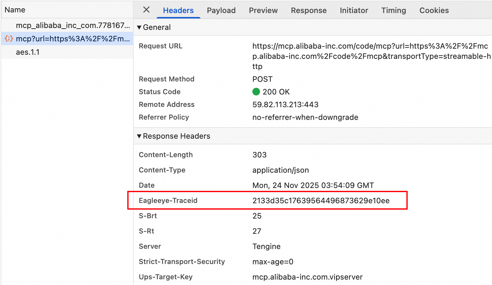
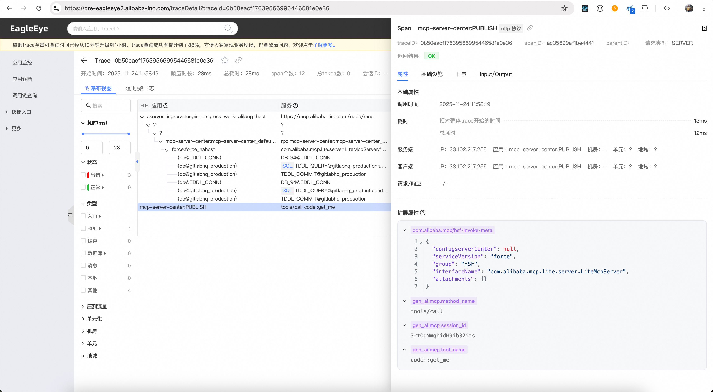
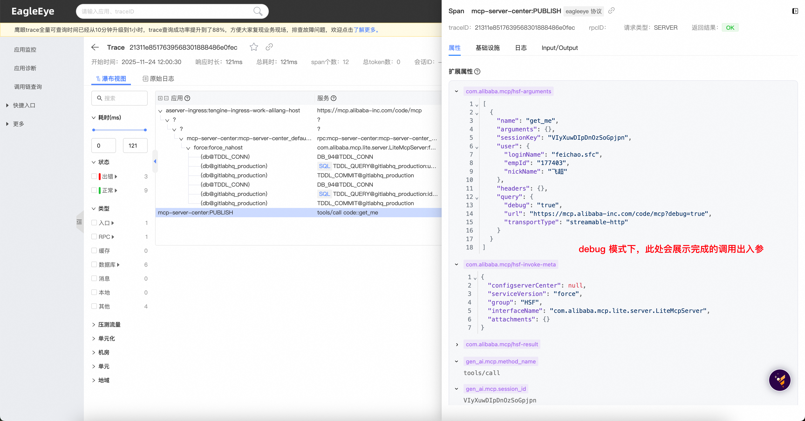

查看工具调用链路与节点数据
简介
Aone MCP 网关当前已通过 OpenTelemetry 接入 EagleEye/Sunfire（相关介绍），你可以通过鹰眼来查看 MCP 工具的调用链路与节点数据。
目前 Aone MCP 网关接入鹰眼存在一些已知限制，请阅读下方的「注意事项」。
操作指南
获取 MCP 工具调用的 EagleEye-TraceId
以 MCP Inspector 为例，你可以通过 Chrome DevTools 的 Network Panel 查看工具调用对应的 HTTP 请求，并在 Response Headers 中获取 TraceId。

在鹰眼中查询 TraceId
在鹰眼中使用 TraceId 进行查询，查看 mcp-server-center 或 tools/call 的 Span 详情。

debug 模式
你可以通过 MCP Server 链接上的查询参数来开启 debug 模式，debug 模式下 Aone MCP 网关会在 Trace 数据中记录完整的请求出入参。
鹰眼中的展示效果：

注意事项
- 当前鹰眼正式环境对 OTel Span 的展示效果较差，你可以尝试切换到鹰眼预发环境
- 当前 OTel 数据仅支持 "HTTP"、"Aone MCP Java SDK" 与 "OpenAPI Transform" 接入类型，debug 模式下支持查看完整出入参
- 其他接入类型仅做基础打点，不支持查看详细信息